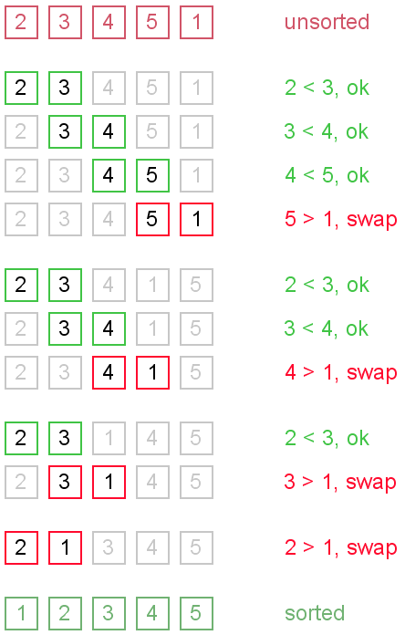

Bubble Sort
Bubble sort is a simple and well-known sorting algorithm. It is used in practice once in a blue moon and its main application is to make an introduction to the sorting algorithms. Bubble sort belongs to O(n2) sorting algorithms, which makes it quite inefficient for sorting large data volumes. Bubble sort is stable and adaptive.
Algorithm
- Compare each pair of adjacent elements from the beginning of an array and, if they are in reversed order, swap them.
- If at least one swap has been done, repeat step 1.
You can imagine that on every step big bubbles float to the surface and stay there. At the step, when no bubble moves, sorting stops. Let us see an example of sorting an array to make the idea of bubble sort clearer.
Example. Sort {5, 1, 12, -5, 16} using bubble sort.

Complexity analysis
Average and worst case complexity of bubble sort is O(n2). Also, it makes O(n2) swaps in the worst case. Bubble sort is adaptive. It means that for almost sorted array it gives O(n) estimation. Avoid implementations, which don't check if the array is already sorted on every step (any swaps made). This check is necessary, in order to preserve adaptive property.
Turtles and rabbits
One more problem of bubble sort is that its running time badly depends on the initial order of the elements. Big elements (rabbits) go up fast, while small ones (turtles) go down very slow. This problem is solved in the Cocktail sort.
Turtle example. Thought, array {2, 3, 4, 5, 1} is almost sorted, it takes O(n2) iterations to sort an array. Element {1} is a turtle.
.png)
Rabbit example. Array {6, 1, 2, 3, 4, 5} is almost sorted too, but it takes O(n) iterations to sort it. Element {6} is a rabbit. This example demonstrates adaptive property of the bubble sort.

Code snippets
There are several ways to implement the bubble sort. Notice, that "swaps" check is absolutely necessary, in order to preserve adaptive property.
Java
public void bubbleSort(int[] arr) {
boolean swapped = true;
int j = 0;
int tmp;
while (swapped) {
swapped = false;
j++;
for (int i = 0; i < arr.length - j; i++) {
if (arr[i] > arr[i + 1]) {
tmp = arr[i];
arr[i] = arr[i + 1];
arr[i + 1] = tmp;
swapped = true;
}
}
}
}
C++
void bubbleSort(int arr[], int n) {
bool swapped = true;
int j = 0;
int tmp;
while (swapped) {
swapped = false;
j++;
for (int i = 0; i < n - j; i++) {
if (arr[i] > arr[i + 1]) {
tmp = arr[i];
arr[i] = arr[i + 1];
arr[i + 1] = tmp;
swapped = true;
}
}
}
}